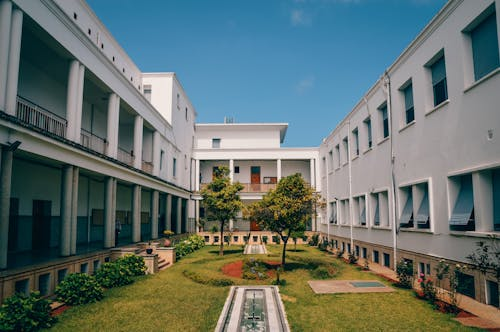
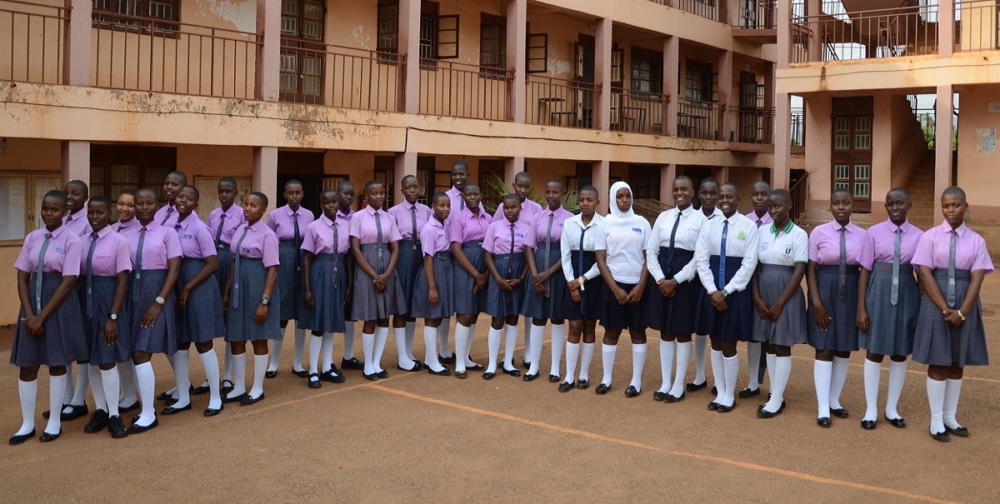

ALUKA SECONDARY SCHOOL

| HOME | ADMISSION | CO-CURRICULAR ACTIVITIES | ABOUT US |

OVERVIEW :-

WHO WE ARE;-
Aluka Secondary School is located in Zombo District
Warr T/C Aluka Cell. The School was founded by Church of Uganda Nebbi Anglican
Diocess in 1996 to ensure that students' excel and gets more knowledge from with
the region. The mission was to fight Illeracy in the district as well as the
Country is Concerned.